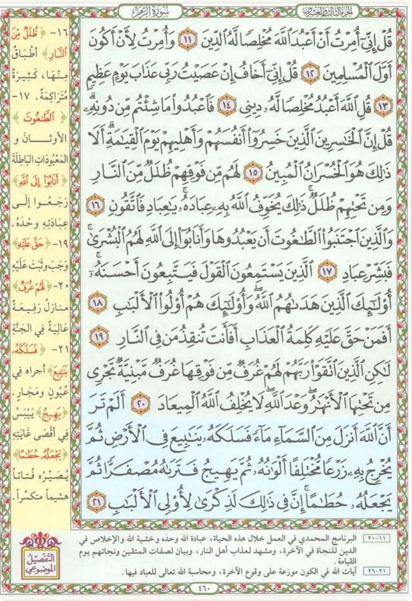

المحاضرة السادسة: مراجعة التليين وأساسيات الحفظ (قبل وأثناء وبعد)، والرابط اللفظي والموضوعي معاً 🧠📖✨
نفتتح المحاضرة بمراجعة شاملة لأساسيات الحفظ (قبل، أثناء، وبعد) وخطوات التليين الخمس، ثم ننتقل إلى المحور العملي المحوري: دمج الرابط اللفظي والموضوعي معاً في آن واحد، وتطبيقه على صفحة 460 من سورة الزمر، مع اكتشاف تقنية الرابط الإجرائي الحركي.
مراجعة شاملة: التليين وأساسيات الحفظ الثلاثة 🔄🧠
ترسيخ المنظومة الذهنية المتكاملة التي درسناها في المحاضرتين الرابعة والخامسة
أساسيات ما قبل الحفظ (5 ركائز):
- ✔ المكان المجهز: إضاءة مريحة، هدوء تام، جلسة صحيحة بظهر مستقيم، وعزل المشتتات تماماً.
- ✔ طلب العون واستحضار النية: تنشيط 36 رابطاً عصبياً وجدانياً يثبت الحفظ.
- ✔ التوجيه الإيجابي الصريح: برمجة العقل الباطن: "سأحفظ بتركيز وسرعة وعقلي قادر على التثبيت".
- ✔ اليقين الحسابي: صفحة المصحف 15 سطراً، وكل سطر يُحفظ في دقيقة = 15 دقيقة للصفحة!
- ✔ خطوة التليين: تهيئة النص للدماغ كالإحماء قبل الرياضة.
خطوات التليين الخمس (Brain Softening):
أساسيات أثناء الحفظ (التقنية العصبية):
- • القراءة الصامتة بالعينين فقط: استخدام إدخال بصري (Visual Input) صرف لمنع تشتت المخ في لحظة التخزين الأولى.
- • الآية القصيرة vs الكبيرة: القصيرة (أقل من سطرين) تُحفظ كوحدة واحدة، والكبيرة تُجزأ عند الوقف وتُجمع تراكمياً (1+2 ثم 1+2+3).
- • التسميع بصوت مسموع: لتشغيل الإدخال السمعي (Auditory Input) ومطابقته مع الصورة الذهنية.
- • إذا نسيت كلمة: (العصف الذهني ➜ التذكر بالفهم والمعنى ➜ تغميض العينين لتذكر موضعها الصوري).
أساسيات ما بعد الحفظ (المراجعات الست):
منحنى النسيان: يفقد المخ 50% في أول ساعة، 20% باليوم الثاني، ويصل الفقد إلى 100% بعد أسبوع إن لم يُراجع.
دمج الرابط اللفظي والموضوعي معاً (سورة الزمر صفحة 460) 📖🔗🎨
كيف نجمع بين الموضوعية واللفظية لحفظ الصفحات المتشابكة وإتقان استرجاعها
💡 لماذا ومتى ندمج الرابط اللفظي والموضوعي معاً؟
تعلمنا سابقاً:
• الرابط الموضوعي المباشر: عندما تكون الصفحة مقسمة إلى مواضيع ملونة واضحة ومستقلة (مثل صفحة 27 من سورة البقرة).
• الرابط اللفظي المباشر: عندما نجد نمطاً لفظياً متكرراً عبر الصفحة بأكملها (مثل صفحة 8 من سورة البقرة).
👈 لكن في صفحات كثيرة: قد لا تجد رابطاً لفظياً مباشراً يغطي كل شيء بمفرده، ولا رابطاً موضوعياً بحتاً يمكن فصله؛ بل نجد الرابطين معاً يتكاملان: رابط موضوعي يجمع كتلة الآيات، وداخل هذه الكتلة روابط لفظية دقيقة تثبت الترتيب!

صفحة 460 من سورة الزمر تتكون من 11 آية تبدأ بـ ﴿قُلْ إِنِّي أُمِرْتُ﴾ وتنتهي بـ ﴿أَلَمْ تَرَ أَنَّ اللَّهَ أَنزَلَ مِنَ السَّمَاءِ مَاءً﴾.
11 آية مقسمة إلى: (كلام النبي ﷺ ➜ الخاسرون ➜ المؤمنون ➜ تقابل ختامي وخاتمة كونية)
بعد التليين وفهم المعاني، نربط الآيات بهذا التسلسل المتقن:
1. تكرار كلمة "قُلْ": موجودة في الآيات 1 و 3 و 4 في الصفحة (11، 13، 14):
• الآية 11: ﴿قُلْ إِنِّي أُمِرْتُ أَنْ أَعْبُدَ اللَّهَ مُخْلِصًا لَّهُ الدِّينَ﴾
• الآية 13: ﴿قُلْ إِنِّي أَخَافُ إِنْ عَصَيْتُ رَبِّي عَذَابَ يَوْمٍ عَظِيمٍ﴾
• الآية 14: ﴿قُلِ اللَّهَ أَعْبُدُ مُخْلِصًا لَّهُ دِينِي﴾
2. رابط لفظي بكلمة "أُمِرْتُ": بين الآية الأولى والثانية في الصفحة:
﴿قُلْ إِنِّي أُمِرْتُ أَنْ أَعْبُدَ اللَّهَ...﴾ ➜ تليها مباشرة ﴿وَأُمِرْتُ لِأَنْ أَكُونَ أَوَّلَ الْمُسْلِمِينَ﴾.
• الآية 15: ﴿فَاعْبُدُوا مَا شِئْتُم مِّن دُونِهِ ۗ قُلْ إِنَّ الْخَاسِرِينَ الَّذِينَ خَسِرُوا أَنفُسَهُمْ وَأَهْلِيهِمْ يَوْمَ الْقِيَامَةِ ۗ أَلَا ذَٰلِكَ هُوَ الْخُسْرَانُ الْمُبِينُ﴾ (التعريف بالخاسرين).
• الآية 16: ﴿لَهُم مِّن فَوْقِهِمْ ظُلَلٌ مِّنَ النَّارِ وَمِن تَحْتِهِمْ ظُلَلٌ...﴾ (وصف عذابهم وظلل النار المحيطة بهم).
• الآية 17: ﴿وَالَّذِينَ اجْتَنَبُوا الطَّاغُوتَ أَن يَعْبُدُوهَا وَأَنَابُوا إِلَى اللَّهِ لَهُمُ الْبُشْرَىٰ ۚ فَبَشِّرْ عِبَادِ﴾ (البشرى للمؤمنين التائبين).
• الآية 18: ﴿الَّذِينَ يَسْتَمِعُونَ الْقَوْلَ فَيَتَّبِعُونَ أَحْسَنَهُ ۚ أُولَٰئِكَ الَّذِينَ هَدَاهُمُ اللَّهُ ۖ وَأُولَٰئِكَ هُمْ أُولُو الْأَلْبَابِ﴾ (صفة المؤمنين: اتباع أحسن القول).
• الآية 19 (عائدة على الخاسرين): ﴿أَفَمَنْ حَقَّ عَلَيْهِ كَلِمَةُ الْعَذَابِ أَفَأَنتَ تُنقِذُ مَن فِي النَّارِ﴾ ➜ ولأننا بدأنا بالخاسرين سابقاً، بدأ التقابل هنا بالخاسرين أولاً!
• الآية 20 (عائدة على المؤمنين): ﴿لَٰكِنِ الَّذِينَ اتَّقَوْا رَبَّهُمْ لَهُمْ غُرَفٌ مِّن فَوْقِهَا غُرَفٌ مَّبْنِيَّةٌ...﴾ ➜ مقابلة للمؤمنين؛ هناك ظلل من النار وهنا غرف مبنية تجري تحتها الأنهار.
• الآية 21 (الخاتمة الكونية): ﴿أَلَمْ تَرَ أَنَّ اللَّهَ أَنزَلَ مِنَ السَّمَاءِ مَاءً فَسَلَكَهُ يَنَابِيعَ فِي الْأَرْضِ...﴾ (الدعوة للنظر في آيات الله وقدرته).
الرابط الإجرائي / الحركي (Procedural Memory Link) 🤲✨
ما هو الرابط الإجرائي؟ هو استدعاء آية أو كلمة معينة عن طريق ربطها بحركة أو إشارة باليد أو الجسد، مما يشرك الذاكرة الحركية (Motor Memory) في الدماغ مع الذاكرة البصرية والسمعية، فيستحيل سقوط الكلمة!
عند تسميع هذه الآية، ضع كفك مبسطاً مظللاً فوق رأسك كالمظلة؛ حركتك هذه تنقش معنى وكلمة "ظُلَل" في الذاكرة الحركية فوراً.
عند الوصول لخاتمة الصفحة، أشر بيديك بحركة انسيابية متجهة من الأعلى إلى الأسفل لمحاكاة هطول الماء؛ فتستحضر الآية بسرعة خيالية.
🧪 تمرين تفاعلي: تدرب على استحضار رؤوس الآيات الـ 11 بالرابطين اللفظي والموضوعي
اخفِ الرؤوس واختبر تسلسل الأفكار والمفاتيح اللفظية غيباً
اختبار استيعاب المحاضرة السادسة 🎯
5 أسئلة ذكية لقياس فهمك لمراجعة الحفظ والتليين ودمج الرابطين والرابط الإجرائي
1. متى نلجأ إلى دمج "الرابط اللفظي" مع "الرابط الموضوعي" معاً في صفحة واحدة؟
2. ما هو الرابط الموضوعي الجامع لأول 4 آيات في صفحة 460 من سورة الزمر؟
3. ما هما الرابطان اللفظيان الحاضران في أول 4 آيات بصفحة 460؟
4. في المقابلة بين الآيتين 19 و 20 في ختام الصفحة، بمن بدأت الآية 19؟ ولماذا؟
5. ما هو "الرابط الإجرائي" (الحركي) وكيف يساعد في الحفظ؟
رائع جداً! استيعاب كامل وتفوق بنسبة 100% في المحاضرة السادسة!
أصبحت الآن متقناً لدمج الرابط اللفظي والموضوعي وتوظيف الرابط الإجرائي الحركي ببراعة.
الواجب العملي التراكمي (المحاضرة 06) 📝🏆
استمرار التمارين التراكمية اليومية مع تكليف حفظ صفحة جديدة وتسجيل زمن الحفظ
- 1. تمارين التنفس 4-4-4: تنفس بطني عميق لمدة 3-5 دقائق لتصفية الذهن (محاضرة 1).
- 2. الرسم والتلوين باليدين معاً: تنشيط نصفي الدماغ الأيمن والأيسر (محاضرة 1).
- 3. الكتابة العادية والمعكوسة باليدين: دقيقة كتابة يومياً لمضاعفة المرونة العصبية (محاضرة 2).
- 4. تمارين زيادة التركيز: تمرين القراءة المعكوسة وتمرين عد الكلمات (محاضرة 3).
- 5. تمارين الأصابع واليد الخمسة: فك تيبس الأصابع ومطابقتها لتنشيط الأعصاب (محاضرة 4).
تطبيق خطوات التليين أولاً، ثم استخراج الكتل الموضوعية والروابط اللفظية المشتركة، وتوظيف الرابط الإجرائي الحركي عند الحاجة.
شغّل المؤقت من لحظة بدء الحفظ البصري بالعينين وسجّل بدقة الزمن المستغرق حتى اكتمال التسميع، وقارن تطور سرعتك بالمعادلة الذهبية (15 دقيقة).
تطبيق المراجعة الأولى فوراً بعد 30 دقيقة، ثم استكمال جدول المراجعات لنقل الصفحة للذاكرة طويلة المدى.
أنت الآن على أعتاب امتلاك منهجية الحفظ الأسرع والأمتن عالمياً!
الاستمرار اليومي وتطبيق القواعد يحول حفظ صفحة القرآن من تحدٍ شاق إلى متعة ذهنية وسرعة فائقة.